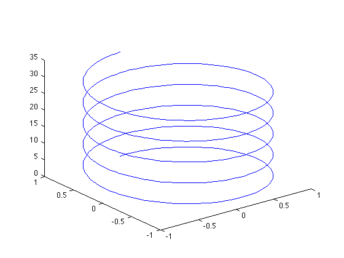
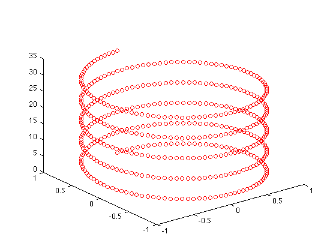
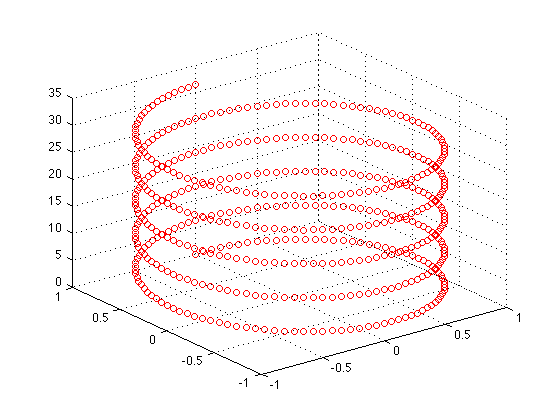
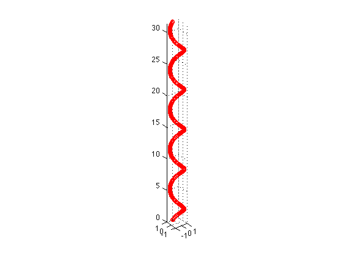
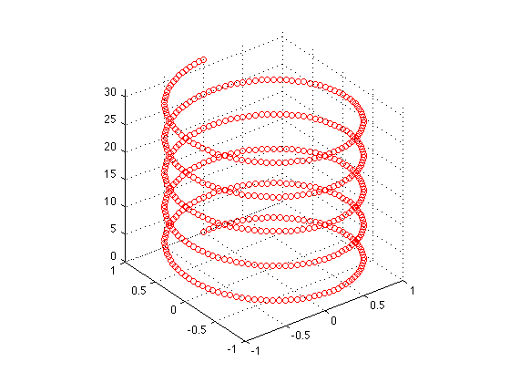
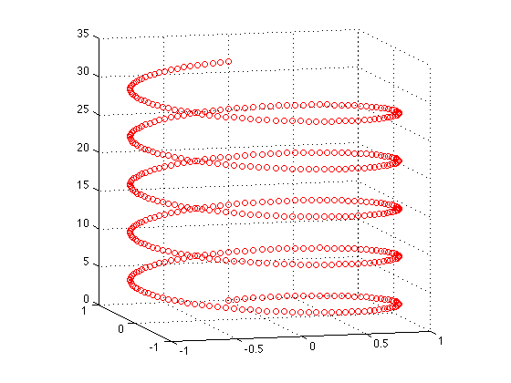

3-D distribution
Sometimes we would like to know the distribution of some objects in the space. The MATLAB function plot3 can display a three-dimensional plot of a set of data points of the (x, y, z) coordinates.
Here's an example of a helix:
t = 0 : pi/50 : 10*pi; x = sin(t); y = cos(t); z = t;
Then the shape of this helix is
plot3(x, y, z)
Note that you can use the same line specification syntax of plot in plot3:
plot3(x, y, z, 'ro')
 To help you read the 3-D plot, type
grid on
 so you can have a feeling about the 3-D space. Also, you can type
axis equal
 so that the x-, y-, and z-axis have the same scale, which gives you a better idea on how the distribution actually looks like. Or, you can type
axis square
 to keep the x-, y-, and z-axis the same length.
More importantly, in the Figure Window, find and click on this icon: , then you can rotate your 3-D plot to any angle of view you like.
